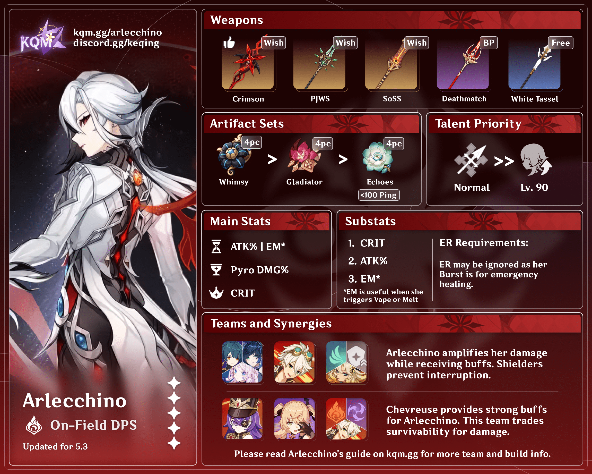

Arlecchino, also known as "The Knave," is one of the Fatui Harbingers.
Fierce and commanding, she leads the House of the Hearth, an orphanage
that produces loyal Fatui agents. Her ideals of strength and
unwavering obedience drive her mercilessly, making her one of the most
feared figures within the Fatui ranks.
Arlecchino is driven by an unrelenting belief in absolute loyalty and
personal strength. As the overseer of the House of the Hearth, she
raises abandoned children with strict discipline and loyalty to the
Fatui cause. Despite her cold and ruthless nature, she has a twisted
sense of care for the orphans under her charge. Her actions and
ideology make her one of the most complex and morally ambiguous
characters among the Harbingers.

Character Demo - "Arlecchino: Lullaby" | Genshin Impact